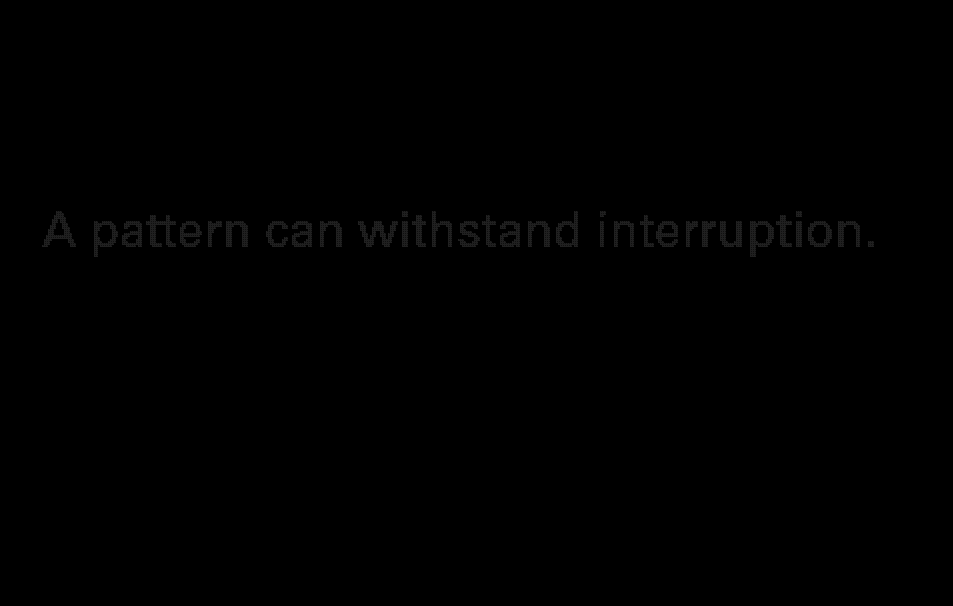
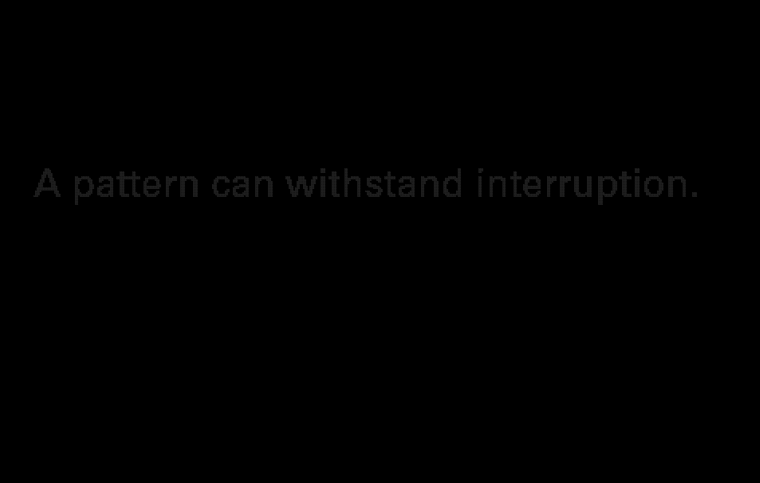

Concept Exploration
Once the angle of approaching this prompt was settled on, research began by exploring ways to visually express individual agency in a system.

Once the angle of approaching this prompt was settled on, research began by exploring ways to visually express individual agency in a system.
It soon became apparent that the idea of modularity combined with some creative coding could be used to communicate both individual atoms and how a system manipulates these units. I wanted to explore how this system could be exposed throughout the length of a page. The viewer should be able to expose the rules of the design system themselves through interaction and exploration.

 

While the techniques I was exploring were inspiring, I was concerned that the ideas I needed to communicate were too lofty and abstract. I decided to start working with the macrostructure of the layout. Not only would this solidify the content I would be working with, but it gave me an opportunity to explore how the message could be something felt by the viewer rather than told to them. The design had to help the viewer “get it” on their own.
Working with the layout also forced me to solidify my type choices since some of the techniques I was exploring required monospaced fonts to work. I also experimented with different modular typefaces to see if my ideas could be communicated through them. If so, I would be able to use their units for macro elements.
Eventually, I decided that communicating complex ideas clearly would best be done by distilling the graphic language to the simplest of elements arranged as a mosiac. I chose basic shapes and a limited yet inviting and optimistic color palette. Limiting the graphic language like this allows the viewer to more easily recognize the design system. It also allows the interactions and reading experience to carry the message through the entire piece.